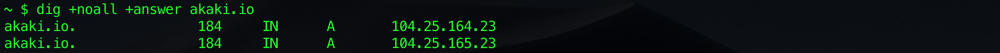
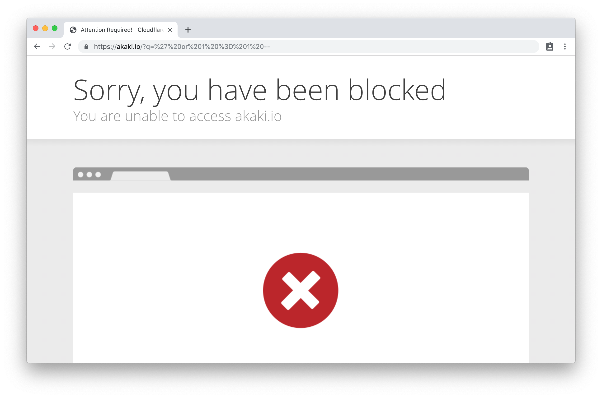
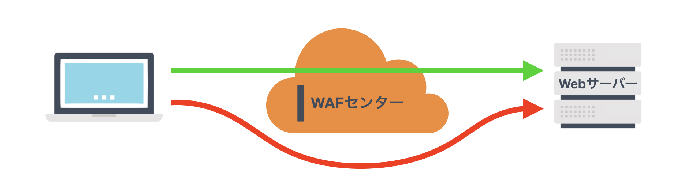
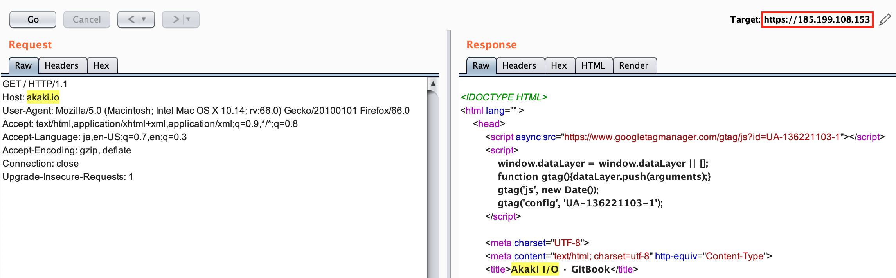
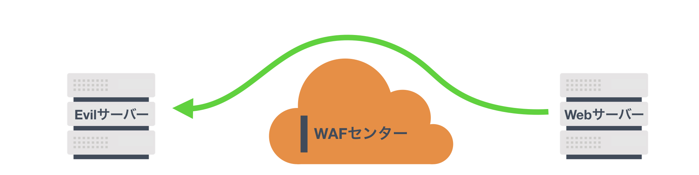
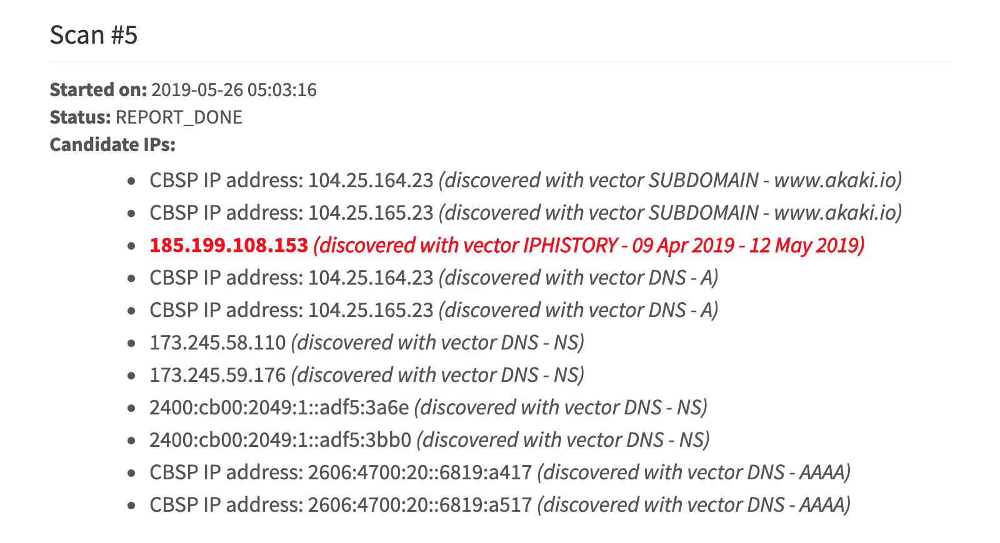

オリジンIPの特定によるクラウド型WAFのバイパス
昨年末に「How i was able to pwned application by Bypassing Cloudflare WAF」を読んで、CloudflareのWAFをバイパスする方法とそれがバグバウンティで認定された事例を知った。記事を書いた@vis_hacker氏は調査に「CloudFlair」というツールを使用しており、このツールを開発した@christophetd氏も同様の方法で報奨金を獲得していた1。
Cloudflareに限らずクラウド型WAFのバイパスは2016年頃には既に話題になっており、論文も書かれていた2。2013年のBlackHat USAではDDoS保護のバイパスとして発表され3、DDoS保護サービスを提供するベンダーが注意喚起を行なっている4 5。脆弱性として興味深かったので詳細をまとめておく。
目次
クラウド型WAFの仕組み
ハードウェアを設置するようなアプライアンス型のWAFとは異なり、クラウド型（SaaS型）のWAFはDNSの切り替えだけで導入できる。保護するWebサイトのドメインをWAFセンターのIPアドレスに名前解決させることで、WAFセンターはリバースプロキシとしてクライアント／サーバー間の通信に介入して攻撃を遮断する。
図1. クラウド型WAFはリバースプロキシとして通信に介入する
Cloudflareの導入
クラウド型WAFの検証のため一時的にこのサイトへCloudflareのWAFを導入する。akaki.io はGitHub Pagesで提供しているため、本来はGitHubが所有するIPアドレスに名前解決される6。今回は akaki.io のNSレコードにCloudflareのネームサーバーを設定し、WAFセンターのIPアドレスに名前解決されるように変更する。

WAFの導入によりクエリ文字列に ' or 1 = 1 -- のようなSQLiペイロードを付与したアクセスは遮断される。

バイパスの仕組み
クラウド型WAFで保護すべきサーバーを「オリジンサーバー」と呼び、そこに割り当てられたグローバルIPアドレスを「オリジンIP」と呼ぶ。オリジンIPへのアクセスがWAFセンター以外にも許可されている場合、インターネットからWAFを経由せずにWebサーバーに直接アクセスできる状態となる。つまり攻撃者は標的サイトのオリジンIPを特定できればWAFに遮断されずに攻撃できる。

図2. オリジンサーバーへの直接攻撃はクラウド型WAFで防げない
特定したIPアドレスが本当にオリジンIPかどうかを確かめるには、そのIPアドレスにアクセスした際のレスポンスとドメインにアクセスした際のレスポンスを比較する。コンテンツの内容がほぼ一致していればオリジンIPだと断定できる。ブラウザからIPアドレスにアクセスしただけではレスポンスが返らない場合は、バーチャルホストで動作している可能性があるため Hostヘッダを本来のドメインに変更して再確認する。
Cloudflareのバイパス
GitHub Pagesが使用するIPアドレスの1つである 185.199.108.153 にアクセスしただけではコンテンツは返らない。Hostヘッダの値を akaki.io に変更するとドメインにアクセスした際と同じコンテンツが返ってくる。

オリジンIPに直接アクセスされるとクラウド型WAFでは保護できなくなる。そのためhostsファイルに 185.199.108.153 akaki.io を追記するなどしてドメインがオリジンIPに名前解決される状態であれば、クエリ文字列に ' or 1 = 1 -- を付与したアクセスでも遮断されない。攻撃者はクラウド型WAFをバイパスしてこのサイトを攻撃できる。
オリジンIPの特定方法
GitHub PagesのようにオリジンIPが明示されていなくても、様々な方法によりオリジンIPを特定できる可能性がある。BlackHat USA 2013でIntegralisの研究者が発表した「DDoS Protection Bypass Techniques」と、2016年にKU LeuvenとStony Brook Universityの共同研究チームが発表した論文「Maneuvering Around Clouds: Bypassing Cloud-based Security Providers」と、いくつかの興味深いブログを参考にオリジンIPの特定方法をまとめる7 8 9 10。
1. サブドメインからの特定
Webサイトをホストしているドメインの多くはサブドメインで別のサービスを提供している。例えば同じサーバー上でメインのサイトを example.com で公開し、バーチャルホストでブログサイトを blog.example.com で公開し、FTPサーバーを ftp.example.com で運用しているようなケースである。メインのサイトだけがクラウド型WAFで保護されている場合、有効なサブドメインとそれに紐付くIPアドレスがわかればオリジンIPを特定できる。
サブドメインを列挙するツールには、一般的なサブドメインを総当たりするNMAPスクリプトの「dns-brute」や、DNSの逆引きやSSL証明書の内容など複数の観点でサブドメインを列挙するOWASPの「Amass」などがある。サブドメインを列挙できるWebサービス「DNSdumpster」や、Comodo CAが提供する証明書検索サービス「crt.sh」でのワイルドカード検索（ %.example.com ）も活用できる。Twitterなどで「subdomain enumeration」と検索すると他にも様々なツールが見つかる。
2. DNSレコードの参照
2.1. 過去のDNSレコード
インターネットに公開されたDNSレコードを記録し続けている「DNSDB」というデータベースがある。クラウド型WAFの導入前にドメインと紐付けられていたIPアドレスが導入後もオリジンサーバーのIPアドレスとして使用されていた場合、DNSレコードの履歴からオリジンIPを特定できる可能性がある。
過去にドメインに紐付いていたIPアドレスは「SecurityTrails」や「Netcraft」、「ViewDNS.info」などのDNS履歴サービスでも検索できる。また「Crimeflare」というWebサービスはDNS履歴などをもとにCloudflareが保護しているIPアドレスを検索できる。列挙したサブドメインをDNS履歴サービスで検索してオリジンIPの特定を試みる「Bypass firewalls by abusing DNS history」というツールもある。
2.2. 他のDNSレコード
ドメインのAレコードはWAFセンターのIPアドレスに置き換えられていても、別のDNSレコードの内容にオリジンIPに紐付く情報が含まれているケースもある。例えばWebサイトとメールサービスが同じサーバー上で運用されている場合、MXレコードで指定されたドメインに紐付くIPアドレスからWebサイトのオリジンIPを特定できる。TXTレコードに含まれるSPFレコードに記載された送信元IPアドレスや、AAAAレコードに残るIPv6アドレスからもオリジンIPを特定できる可能性がある。
3. 共通情報による紐付け
3.1. SSL証明書
クラウド型WAFで保護するサイトをWAFベンダー以外で発行したSSL証明書でHTTPS化するには、発行したSSL証明書をWAFセンターに設置する必要がある。オリジンサーバーでも同じ証明書が使用されていた場合、Censysの証明書検索によりオリジンサーバーと紐付けることでオリジンIPを特定できる可能性がある。
CloudflareではBusinessプランから他社の認証局で発行したSSL証明書をWAFセンターに設置できる。CloudflareのWAFセンターに設置されたSSL証明書を使用しているサイトを探索してオリジンIPの特定を試みるツールとして「CloudFlair」や「Cloudsnare」がある。
3.2. サイト固有の情報
クラウド型WAFで保護されたサイトのtitle要素や独自のHTTPヘッダ、HTMLに含まれるGoogle AnalyticsのトラッキングコードやreCAPTCHAのサイトキーのようなサイト固有の情報をサーチエンジンで検索することで、オリジンサーバーと紐付けられる可能性もある。「CloudBunny」というツールはCensysでの証明書検索に加え、Censys、Shodan、ZoomEyeの3つのサーチエンジンでtitle要素を検索してオリジンIPの特定を試みる。
4. Webサイトからの取得
4.1. アウトバウンド通信
オリジンサーバーから外部サーバーへ向かう通信はWAFセンターを経由しない。そのためクラウド型WAFで保護されたサイトに外部サーバーへの通信を発生させられる機能が存在する場合、管理下のサーバーに通信を発生させることで接続元IPアドレスからオリジンIPを特定できる。URLから画像を取得する機能や、WebhookやPingbackといった機能は任意のサーバーに通信を発生させられるためオリジンIPの特定に利用できる。

図3. アウトバウンド通信はWAFセンターを経由しない
Webサイトにメール配信機能がありオリジンサーバーからメールが送信される場合、受信したメールのReceivedヘッダに含まれる送信元IPアドレスからオリジンIPを特定できる。アカウント登録完了やパスワード再設定の際に送信されるメールなどから特定できる可能性がある。
4.2. コンテンツ
Webサイトの管理不備により公開状態になったログファイルや開発時のファイル、HTMLコメントにオリジンIPが記載されている可能性がある。またWebサーバーやWebアプリケーションが出力するエラーメッセージの内容にオリジンIPが含まれる可能性もある。
5. その他の方法
オリジンIPを特定する方法は他にもある。例えば全てのグローバルIPアドレスにアクセスして確認する力技や、WAFベンダーの社員を装ってサイト運営者からオリジンIPを聞き出すようなソーシャルエンジニアリングが考えられる。他にもメンテナンスやサーバー移行などの理由でクラウド型WAFの利用を一時停止した際に公開されるオリジンIPを見逃さないようにドメインを監視するなど、手間を惜しまなければオリジンIPを特定できる可能性は高い。
過去にはCloudflareのDMCA申し立て対応を悪用することでオリジンIPの特定が可能だった。CloudflareはDMCA侵害の疑いのあるサイトのオリジンIPを申立人に提供していたため、虚偽の申し立てを行なうことで標的サイトのオリジンIPを特定できた。しかしCloudflareはこの対応プロセスを見直し、現在は正当な申し立てであっても申立人にオリジンIPを提供しない仕組みになっている11。
ツールによる検査
オリジンIPを特定するツールとして取り上げた4つのツールと、KU LeuvenとStony Brook Universityの共同研究チームが開発した「CloudPiercer」というWebサービスを加えた合計5つのツールを使用して akaki.io を検査する。CloudPiercerは対象サイトの管理者のみ検査できる仕様であり、今回は akaki.io のTXTレコードに認証コードを含めることでサイト管理者であることを証明している。
各ツールでの検査は以下のような結果になった。CloudPiercerだけが akaki.io のオリジンIPを特定できた。
| ツール名称 | 特定方法 | 特定可否 | 可否理由 |
|---|---|---|---|
| CloudFlair | 3.1 | 否 | akaki.io はCloudflareのSSL証明書を使用しているため |
| Cloudsnare | 3.1 | 否 | akaki.io はCloudflareのSSL証明書を使用しているため |
| CloudBunny | 3.1 3.2 | 否 | akaki.io はCloudflareのSSL証明書を使用しており、www.akaki.io もCloudflareの保護下にあるため |
| CloudPiercer | 1 2.1 2.2 3.1 4.1 4.2 | 可 | DNS履歴サービスの検索で akaki.io の過去のIPアドレスが見つかったため |
| Bypass firewalls by abusing DNS history | 2.1 | 否 | DNS履歴サービスの検索で *.akaki.io の過去のIPアドレスが見つからなかったため |
CloudPiercerは6種類の方法によりオリジンIPの特定を試みる。今回の検査ではDNS履歴の追跡によりオリジンIPを特定している。CloudPiercerはOSSではないため詳細な検査ロジックは不明だが、論文によるとDNS履歴の追跡には「DomainTools」と「Myip.ms」を使用しているとのこと。実際にMyip.msで akaki.io を検索するとCloudflareの導入前に使用していたIPアドレスが見つかるため、CloudPiercerも同様にオリジンIPを特定したと推測する。

バイパスへの対策
クラウド型WAFのバイパスを防ぐには「オリジンIPの特定阻止」または「オリジンIPへのアクセス制限」が対策となる。前者は数ある特定方法ごとの対策が必要であり、完全にオリジンIPの特定を阻止するのは困難であるため緩和策だと考える。後者はオリジンIPへのアクセスをWAFセンターのみに制限することで、攻撃者は標的サイトのオリジンIPを特定できても直接攻撃できなくなるため、対策として効果が期待できる。
Cloudflareのセキュリティガイドラインでは、オリジンIPの特定を阻止する策として「不要なDNSレコードの削除」や「別サーバーでのメールサービスの提供」、「IPアドレスの変更」をあげている12。またオリジンIPへのアクセスを制限する策として「iptablesによるアクセス制限」の手順を説明している13。ただしiptablesによるアクセス制限ではサーバーリソースやネットワーク帯域を枯渇させるDDoS攻撃への対策としては不十分な場合がある。より効果的な対策としてCloudflareはWAFセンターとオリジンサーバー間をTLSトンネル化する「Argo Tunnel」を提供している。
所感
CloudflareのWAFを導入するために私は$20を支払ってProプランを契約した。企業向けのプランを利用する場合はより高額な契約料を毎月支払う事になる。高額な契約料を支払ってクラウド型WAFを導入してもバイパスされては意味がない。バグバウンティのスコープでそれを見つけて報告すれば、大抵の企業は報奨金を支払ってくれるだろう。今回まとめた特定方法を総合的にチェックできるツールを使えば効率的に調査できるが、CloudPiercerのようなOSSは見つからなかったので自作するしかない。
オリジンIPを特定する方法は他にもあるだろう。サーバーやミドルウェア起因のリダイレクト処理での漏洩や、SSRFの脆弱性によるアウトバウンド通信により特定できる可能性はある。今後は新しい特定方法を模索していきたい。オリジンIPの特定方法はTorサービスのリアルIPの特定にも応用できそうだが、身の危険を感じる14 15。
1 https://blog.christophetd.fr/bypassing-cloudflare-using-internet-wide-scan-data/
2 https://distrinet.cs.kuleuven.be/news/2016/BypassingCloud.pdf
3 https://www.blackhat.com/us-13/archives.html#Nixon
4 https://blog.cloudflare.com/ddos-prevention-protecting-the-origin/
5 https://blogs.akamai.com/2013/08/bypassing-content-delivery-security.html
6 https://help.github.com/en/articles/setting-up-an-apex-domain#configuring-a-records-with-your-dns-provider
7 https://www.1337pwn.com/how-to-find-real-ip-address-website-behind-cloudflare/
8 https://www.ericzhang.me/resolve-cloudflare-ip-leakage/
9 https://www.wordfence.com/blog/2016/10/endpoint-vs-cloud-security-cloud-waf-bypass-problem/
10 https://www.rootusers.com/find-the-ip-address-of-a-website-behind-cloudflare/
11 https://blog.cloudflare.com/thoughts-on-abuse/
12 https://support.cloudflare.com/hc/en-us/articles/200170166-General-website-security-guidelines
13 https://support.cloudflare.com/hc/en-us/articles/200169166-How-do-I-whitelist-Cloudflare-s-IP-addresses-in-iptables-
14 https://www.secjuice.com/finding-real-ips-of-origin-servers-behind-cloudflare-or-tor/
15 https://blog.0day.rocks/securing-a-web-hidden-service-89d935ba1c1d